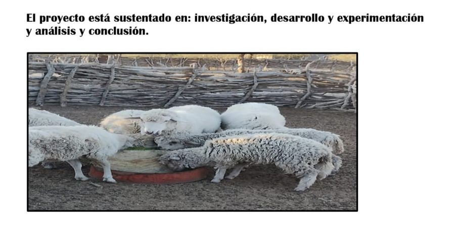
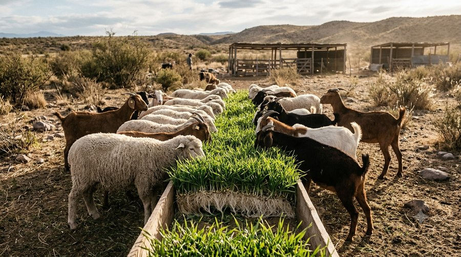
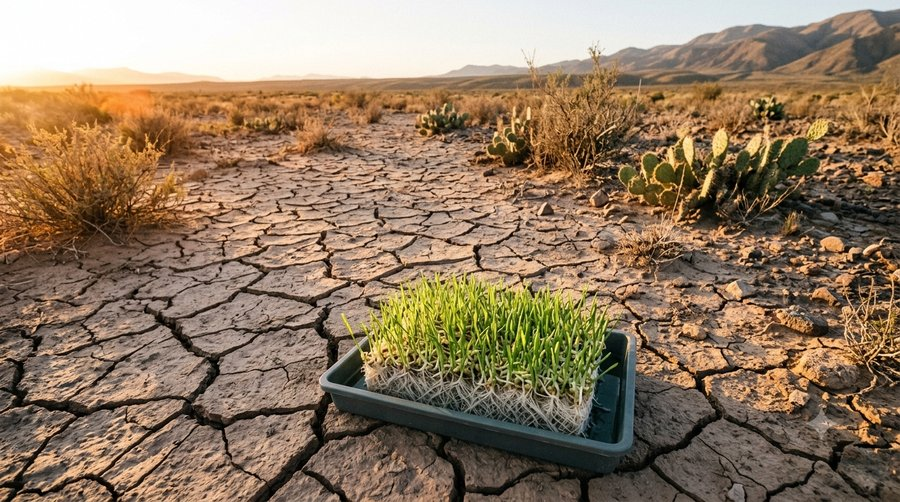

Desarrollo Regional
Forraje Verde Hidropónico
Secano Lavallino

Pulsá para iniciar la actividad

📸 Informática Educativa · Profe Gustavo Aguilar
Desarrollo Regional
Secano Lavallino

Menos prisa, más vida 🧉🫂
Uní cada pregunta con su respuesta.

Tocá las 3 opciones que son objetivos reales del proyecto.
Tocá el paso que corresponda, en orden, del primero al último.

Menos prisa, más vida 🧉🫂